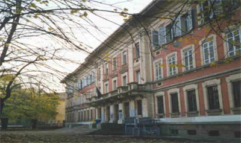

Presentazione
Presentazione
Margherita Boccucci, sez. I2
Mi chiamo Margherita e sono nata a Parma l'8 marzo 1997.
Ho frequentato le scuole elementare e media in piccole scuole di città.
In quel periodo praticavo a tempo pieno un corso di danza classica, per la quale avevo grande passione a quell'età, ma che purtroppo dovetti abbandonare durante il liceo.
Infatti mi iscrissi al liceo classico, in particolare il Liceo Classico G.D. Romagnosi, scuola che richiedeva grande impegno, ma anche di nota importanza per la sua storicità.

Quando ero piccola avevo molteplici aspirazioni per il futuro, sarei voluta diventare:
- biologa marina, per la mia passione per il mare;
- lavorare in una biblioteca, poichè amavo molto la lettura;
- diventare pianista, infatti durante la scuola elementare prendevo lezioni di pianoforte.
Durante il liceo sviluppai una particolare attitudine per la fotografia, che avvicinò in seguito il mio interesse nel campo dell'architettura e del design.
Infatti subito dopo la maturità feci il test d'ingresso per la Scuola del design del Politecnico di Milano, ma non riuscii ad entrare.
Per questo quell'anno frequentai il corso di Comunicazione e Media contemporanei per l'industria creativa, nell'Università di Parma.
Durante l'anno riuscii ad approfondire una cultura generale e personale che mi permisero, alla fine di esso, di preparare in un miglior modo il test d'ingresso, che infatti riuscii a superare.
Così a settembre ho iniziato il corso di Design degli Interni, e mi ritengo soddisfatta della mia scelta.